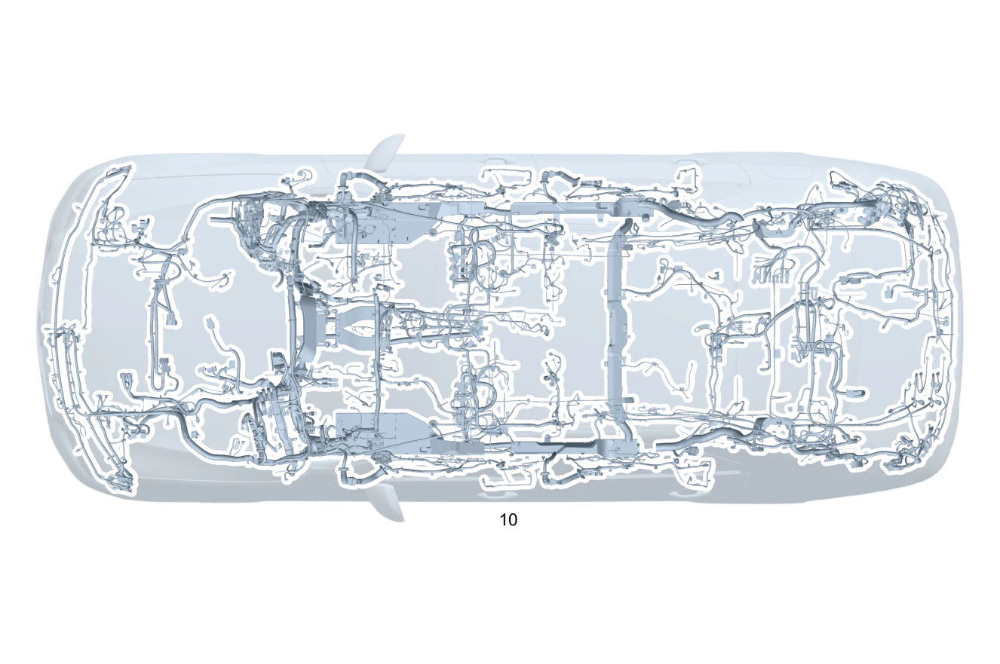

| № | Артикул | Название | Кол. | Примечание | Ограничение |
|---|---|---|---|---|---|
| 10 | A 206 540 60 53 | Электрический жгут (ELECTRICAL WIRING HARNESS) | 1 | Основной жгут электропроводки системы рамы и пола [-] В жгуте проводов предусмотрена возможность подключения соответствующих дополнительных опций согласно производственному номеру а/м [-] При заказе указать идент. номер | |
| 10 | A 206 540 23 89 | Электрический жгут | 1 | Основной жгут электропроводки системы рамы и пола [-] В жгуте проводов предусмотрена возможность подключения соответствующих дополнительных опций согласно производственному номеру а/м [-] При заказе указать идент. номер | 700 |
| 20 | Q 000000000002 | - Возможен заказ только отдельных компонентов жгута проводов | 1 | Провод электропитания ESP® Рулевое управление: Влево | |
| 20 | Q 000000000002 | - Возможен заказ только отдельных компонентов жгута проводов | 1 | Датчик ESP Рулевое управление: Влево | B01 |
| 20 | Q 000000000002 | - Возможен заказ только отдельных компонентов жгута проводов | 1 | Амортизаторы с регулируемой жёсткостью и датчики уровня а/м Рулевое управление: Влево | 459 |
| 20 | Q 000000000002 | - Возможен заказ только отдельных компонентов жгута проводов | 1 | Регулировка уровня кузова Рулевое управление: Влево | 480 |
| 20 | Q 000000000002 | - Возможен заказ только отдельных компонентов жгута проводов | 1 | Натяжитель ремня безопасности Рулевое управление: Влево | |
| 20 | Q 000000000002 | - Возможен заказ только отдельных компонентов жгута проводов | 1 | Аварийный натяжитель ремня безопасности в задней части салона Рулевое управление: Влево | |
| 20 | Q 000000000002 | - Возможен заказ только отдельных компонентов жгута проводов | 1 | Боковая подушка безопасности (задняя) Рулевое управление: Влево | 293 |
| 20 | Q 000000000002 | - Возможен заказ только отдельных компонентов жгута проводов | 1 | Подушка безопасности в сиденье водителя Рулевое управление: Влево | (292/275) |
| 20 | Q 000000000002 | - Возможен заказ только отдельных компонентов жгута проводов | 1 | Система контроля давления в шинах (RDK) Рулевое управление: Влево | 475 |
| 20 | Q 000000000002 | - Возможен заказ только отдельных компонентов жгута проводов | 1 | Система контроля давления в шинах (RDK) Рулевое управление: Влево | (807/808/29X)+475 |
| 20 | Q 000000000002 | - Возможен заказ только отдельных компонентов жгута проводов | 1 | Защита пешеходов Рулевое управление: Влево | U60 |
| 20 | Q 000000000002 | - Возможен заказ только отдельных компонентов жгута проводов | 1 | Защита пешеходов Рулевое управление: Влево | (807/808)+U60 |
| 20 | Q 000000000002 | - Возможен заказ только отдельных компонентов жгута проводов | 1 | Зарядное устройство для аккумуляторной батареи Рулевое управление: Влево | (80B/81B/82B) |
| 20 | Q 000000000002 | - Возможен заказ только отдельных компонентов жгута проводов | 1 | Зарядное устройство для аккумуляторной батареи Рулевое управление: Влево | 83B+(80B/81B/82B) |
| 20 | Q 000000000002 | - Возможен заказ только отдельных компонентов жгута проводов | 1 | Прикуриватель Рулевое управление: Влево | |
| 20 | Q 000000000002 | - Возможен заказ только отдельных компонентов жгута проводов | 1 | Адаптивная система амортизации правая | |
| 20 | Q 000000000002 | - Возможен заказ только отдельных компонентов жгута проводов | 1 | Система центральной блокировки замков Рулевое управление: Влево | |
| 20 | Q 000000000002 | - Возможен заказ только отдельных компонентов жгута проводов | 1 | Система центральной блокировки замка задней двери Рулевое управление: Влево | |
| 20 | Q 000000000002 | - Возможен заказ только отдельных компонентов жгута проводов | 1 | Блок управления SAM спереди Рулевое управление: Влево | 873/401 |
| 20 | Q 000000000002 | - Возможен заказ только отдельных компонентов жгута проводов | 1 | Шина данных CAN сиденья Рулевое управление: Влево | 399/(872+(873/401))/(221+222)/(275) |
| 20 | Q 000000000002 | - Возможен заказ только отдельных компонентов жгута проводов | 1 | Шина данных CAN сиденья Рулевое управление: Влево | 399/(872+(873/401))/(221+222)/(275)/01T |
| 20 | Q 000000000002 | - Возможен заказ только отдельных компонентов жгута проводов | 1 | Замок ремня безопасности впереди справа Рулевое управление: Влево | 807/808/29X |
| 20 | Q 000000000002 | - Возможен заказ только отдельных компонентов жгута проводов | 1 | Замок ремня безопасности впереди Рулевое управление: Влево | |
| 20 | Q 000000000002 | - Возможен заказ только отдельных компонентов жгута проводов | 1 | Замок ремня безопасности в задней части салона Рулевое управление: Влево | U01 |
| 20 | Q 000000000002 | - Возможен заказ только отдельных компонентов жгута проводов | 1 | Связь по шине данных LIN, подушка безопасности Рулевое управление: Влево | 382/U10/01T |
| 20 | Q 000000000002 | - Возможен заказ только отдельных компонентов жгута проводов | 1 | Основная область применения шины FlexRay Рулевое управление: Влево | (807/808) |
| 20 | Q 000000000002 | - Возможен заказ только отдельных компонентов жгута проводов | 1 | Интеллектуальное движение Рулевое управление: Влево | (807/808)+B01+4B1 |
| 20 | Q 000000000002 | - Возможен заказ только отдельных компонентов жгута проводов | 1 | Блок управления электронного замка зажигания (EZS) | (807/808)+(459/ME10+480) |
| 20 | Q 000000000002 | - Возможен заказ только отдельных компонентов жгута проводов | 1 | Шина данных CAN Рулевое управление: Влево | |
| 20 | Q 000000000002 | - Возможен заказ только отдельных компонентов жгута проводов | 1 | Шина данных CAN Рулевое управление: Влево | (807/808/29X) |
| 20 | Q 000000000002 | - Возможен заказ только отдельных компонентов жгута проводов | 1 | Базовый объем Ethernet Рулевое управление: Влево | (807/808)+(3B9/316/317/318) |
| 20 | Q 000000000002 | - Возможен заказ только отдельных компонентов жгута проводов | 1 | Шина данных CAN, моторный отсек Рулевое управление: Влево | B01 |
| 20 | Q 000000000002 | - Возможен заказ только отдельных компонентов жгута проводов | 1 | Шина данных CAN, моторный отсек Рулевое управление: Влево | B01+1U2 |
| 20 | Q 000000000002 | - Возможен заказ только отдельных компонентов жгута проводов | 1 | Несущее основание кузова (базовый объём оборудования) Рулевое управление: Влево | (807/808/29X) |
| 20 | Q 000000000002 | - Возможен заказ только отдельных компонентов жгута проводов | 1 | Провод электропитания аккумуляторной батареи 48 В Рулевое управление: Влево | (807/808)+B01 |
| 20 | Q 000000000002 | - Возможен заказ только отдельных компонентов жгута проводов | 1 | Пиропредохранитель Рулевое управление: Влево | B01 |
| 20 | Q 000000000002 | - Возможен заказ только отдельных компонентов жгута проводов | 1 | Датчик веса в сиденье Рулевое управление: Влево | U10 |
| 20 | Q 000000000002 | - Возможен заказ только отдельных компонентов жгута проводов | 1 | Датчик веса в сиденье Рулевое управление: Влево | |
| 20 | Q 000000000002 | - Возможен заказ только отдельных компонентов жгута проводов | 1 | Шина данных CAN периферийного оборудования Рулевое управление: Влево | |
| 20 | Q 000000000002 | - Возможен заказ только отдельных компонентов жгута проводов | 1 | Шина данных CAN периферийного оборудования Рулевое управление: Влево | 475 |
| 20 | Q 000000000002 | - Возможен заказ только отдельных компонентов жгута проводов | 1 | Шина данных CAN периферийного оборудования Рулевое управление: Влево | (807/808) |
| 20 | Q 000000000002 | - Возможен заказ только отдельных компонентов жгута проводов | 1 | Шина данных CAN периферийного оборудования Рулевое управление: Влево | (807/808)+475 |
| 20 | Q 000000000002 | - Возможен заказ только отдельных компонентов жгута проводов | 1 | Системы освещения Рулевое управление: Влево | (807/808)+3B9 |
| 20 | Q 000000000002 | - Возможен заказ только отдельных компонентов жгута проводов | 1 | Системы освещения Рулевое управление: Влево | (807/808/29X)+3B9 |
| 20 | Q 000000000002 | - Возможен заказ только отдельных компонентов жгута проводов | 1 | Системы освещения Рулевое управление: Влево | (807/808)+3B9+24U |
| 20 | Q 000000000002 | - Возможен заказ только отдельных компонентов жгута проводов | 1 | Системы освещения Рулевое управление: Влево | (807/808/29X)+3B9+24U |
| 20 | Q 000000000002 | - Возможен заказ только отдельных компонентов жгута проводов | 1 | Статический светодиодный свет Рулевое управление: Влево | (807/808/29X) |
| 20 | Q 000000000002 | - Возможен заказ только отдельных компонентов жгута проводов | 1 | Динамический светодиодный свет Рулевое управление: Влево | (807/808/29X)+(316/317/318) |
| 20 | Q 000000000002 | - Возможен заказ только отдельных компонентов жгута проводов | 1 | Освещение спереди Рулевое управление: Влево | (807/808/29X)+5B6 |
| 20 | Q 000000000002 | - Возможен заказ только отдельных компонентов жгута проводов | 1 | Освещение спереди Рулевое управление: Влево | (807/808/29X)+(316/317/318)+5B6 |
| 20 | Q 000000000002 | - Возможен заказ только отдельных компонентов жгута проводов | 1 | Переходный провод светодиодных задних фонарей Рулевое управление: Влево | 807+099+632 |
| 20 | Q 000000000002 | - Возможен заказ только отдельных компонентов жгута проводов | 1 | Переходный провод светодиодных задних фонарей Рулевое управление: Влево | 807+099+318 |
| 20 | Q 000000000002 | - Возможен заказ только отдельных компонентов жгута проводов | 1 | Задние фонари Рулевое управление: Влево | 632 |
| 20 | Q 000000000002 | - Возможен заказ только отдельных компонентов жгута проводов | 1 | Задние фонари Рулевое управление: Влево | 318 |
| 20 | Q 000000000002 | - Возможен заказ только отдельных компонентов жгута проводов | 1 | Задний противотуманный фонарь | (316/318/632) |
| 20 | Q 000000000002 | - Возможен заказ только отдельных компонентов жгута проводов | 1 | Задний противотуманный фонарь | (316/318/632)+807+099 |
| 20 | Q 000000000002 | - Возможен заказ только отдельных компонентов жгута проводов | 1 | Выключатель заднего противотуманного фонаря | (807/808)+(316/318/632) |
| 20 | Q 000000000002 | - Возможен заказ только отдельных компонентов жгута проводов | 1 | Плафон освещения зоны посадки (передний) Рулевое управление: Влево | U25/U45 |
| 20 | Q 000000000002 | - Возможен заказ только отдельных компонентов жгута проводов | 1 | Плафон освещения зоны посадки (передний) Рулевое управление: Влево | U45 |
| 20 | Q 000000000002 | - Возможен заказ только отдельных компонентов жгута проводов | 1 | Освещение входа сзади Рулевое управление: Влево | U25/U45 |
| 20 | Q 000000000002 | - Возможен заказ только отдельных компонентов жгута проводов | 1 | Освещение входа сзади Рулевое управление: Влево | U45 |
| 20 | Q 000000000002 | - Возможен заказ только отдельных компонентов жгута проводов | 1 | Крепление переключающего клапана и трубопроводов системы охлаждения Рулевое управление: Влево | (807/808/29X)+B01 |
| 20 | Q 000000000002 | - Возможен заказ только отдельных компонентов жгута проводов | 1 | Крепление переключающего клапана и трубопроводов системы охлаждения Рулевое управление: Влево | (807/808/29X)+B01 |
| 20 | Q 000000000002 | - Возможен заказ только отдельных компонентов жгута проводов | 1 | Панорамная крыша Рулевое управление: Влево | 413 |
| 20 | Q 000000000002 | - Возможен заказ только отдельных компонентов жгута проводов | 1 | Панорамная крыша Рулевое управление: Влево | 414 |
| 20 | Q 000000000002 | - Возможен заказ только отдельных компонентов жгута проводов | 1 | Датчик дождя и освещенности Рулевое управление: Влево | (233/266) |
| 20 | Q 000000000002 | - Возможен заказ только отдельных компонентов жгута проводов | 1 | Датчик дождя и освещенности Рулевое управление: Влево | (807/808/29X)+(233/266) |
| 20 | Q 000000000002 | - Возможен заказ только отдельных компонентов жгута проводов | 1 | Датчик дождя и освещенности Рулевое управление: Влево | |
| 20 | Q 000000000002 | - Возможен заказ только отдельных компонентов жгута проводов | 1 | Датчик дождя и освещенности Рулевое управление: Влево | (807/808/29X) |
| 20 | Q 000000000002 | - Возможен заказ только отдельных компонентов жгута проводов | 1 | Датчик температуры Рулевое управление: Влево | |
| 20 | Q 000000000002 | - Возможен заказ только отдельных компонентов жгута проводов | 1 | Датчик температуры к бамперу спереди Рулевое управление: Влево | 807/808 |
| 20 | Q 000000000002 | - Возможен заказ только отдельных компонентов жгута проводов | 1 | Трансмиссия Рулевое управление: Влево | |
| 20 | Q 000000000002 | - Возможен заказ только отдельных компонентов жгута проводов | 1 | Трансмиссия Рулевое управление: Влево | 1U2 |
| 20 | Q 000000000002 | - Возможен заказ только отдельных компонентов жгута проводов | 1 | Диагностика топливной системы 48V Рулевое управление: Влево | B01+M254+830 |
| 20 | Q 000000000002 | - Возможен заказ только отдельных компонентов жгута проводов | 1 | Базовый объем топливной системы Рулевое управление: Влево | |
| 20 | Q 000000000002 | - Возможен заказ только отдельных компонентов жгута проводов | 1 | Базовый объем топливной системы Рулевое управление: Влево | (807/808/29X) |
| 20 | Q 000000000002 | - Возможен заказ только отдельных компонентов жгута проводов | 1 | Шина данных CAN CEPC Рулевое управление: Влево | |
| 20 | Q 000000000002 | - Возможен заказ только отдельных компонентов жгута проводов | 1 | Шина данных CAN CEPC Рулевое управление: Влево | 1U2 |
| 20 | Q 000000000002 | - Возможен заказ только отдельных компонентов жгута проводов | 1 | Шина данных CAN CEPC Рулевое управление: Влево | B53/B63/M139/6U0 |
| 20 | Q 000000000002 | - Возможен заказ только отдельных компонентов жгута проводов | 1 | Шина данных CAN CEPC Рулевое управление: Влево | B53/M139 |
| 20 | Q 000000000002 | - Возможен заказ только отдельных компонентов жгута проводов | 1 | Топливный насос к блоку управления Рулевое управление: Влево | (807/808/29X)+1U2 |
| 20 | Q 000000000002 | - Возможен заказ только отдельных компонентов жгута проводов | 1 | Датчик давления топливной системы Рулевое управление: Влево | M254/M139 |
| 20 | Q 000000000002 | - Возможен заказ только отдельных компонентов жгута проводов | 1 | Датчик давления топливной системы Рулевое управление: Влево | M254/M139/M256 |
| 20 | Q 000000000002 | - Возможен заказ только отдельных компонентов жгута проводов | 1 | Датчик уровня | |
| 20 | Q 000000000002 | - Возможен заказ только отдельных компонентов жгута проводов | 1 | Высоковольтная АКБ Рулевое управление: Влево | (803+053/804)+B01+830 |
| 20 | Q 000000000002 | - Возможен заказ только отдельных компонентов жгута проводов | 1 | Высоковольтная АКБ Рулевое управление: Влево | B01 |
| 20 | Q 000000000002 | - Возможен заказ только отдельных компонентов жгута проводов | 1 | Высоковольтная АКБ Рулевое управление: Влево | B01+065+830 |
| 20 | Q 000000000002 | - Возможен заказ только отдельных компонентов жгута проводов | 1 | Высоковольтная АКБ Рулевое управление: Влево | B01+830+(805+055/806/807/808) |
| 20 | Q 000000000002 | - Возможен заказ только отдельных компонентов жгута проводов | 1 | Высоковольтная АКБ Рулевое управление: Влево | B01+830 |
| 20 | Q 000000000002 | - Возможен заказ только отдельных компонентов жгута проводов | 1 | Шина данных CAN 48V Рулевое управление: Влево | B01 |
| 20 | Q 000000000002 | - Возможен заказ только отдельных компонентов жгута проводов | 1 | Шина данных CAN 48V Рулевое управление: Влево | B01+065 |
| 20 | Q 000000000002 | - Возможен заказ только отдельных компонентов жгута проводов | 1 | Шина данных CAN 48V Рулевое управление: Влево | B01+(805+055/806/807/808) |
| 20 | Q 000000000002 | - Возможен заказ только отдельных компонентов жгута проводов | 1 | Шина данных CAN 48V Рулевое управление: Влево | B01 |
| 20 | Q 000000000002 | - Возможен заказ только отдельных компонентов жгута проводов | 1 | Шина данных CAN 48V Рулевое управление: Влево | B01+1U2 |
| 20 | Q 000000000002 | - Возможен заказ только отдельных компонентов жгута проводов | 1 | Интегрированный стартер\-генератор (48 В) Рулевое управление: Влево | B01 |
| 20 | Q 000000000002 | - Возможен заказ только отдельных компонентов жгута проводов | 1 | Блок управления интегрированным стартер\-генератором Рулевое управление: Влево | (807/808/29X)+B01 |
| 20 | Q 000000000002 | - Возможен заказ только отдельных компонентов жгута проводов | 1 | Связь по шине данных LIN 48V Рулевое управление: Влево | B01 |
| 20 | Q 000000000002 | - Возможен заказ только отдельных компонентов жгута проводов | 1 | Пиропредохранитель 48V Рулевое управление: Влево | B01 |
| 20 | Q 000000000002 | - Возможен заказ только отдельных компонентов жгута проводов | 1 | Пиропредохранитель 48V Рулевое управление: Влево | B01+065 |
| 20 | Q 000000000002 | - Возможен заказ только отдельных компонентов жгута проводов | 1 | Пиропредохранитель 48V Рулевое управление: Влево | B01+(805+055/806) |
| 20 | Q 000000000002 | - Возможен заказ только отдельных компонентов жгута проводов | 1 | Пиропредохранитель 48V Рулевое управление: Влево | B01 |
| 20 | Q 000000000002 | - Возможен заказ только отдельных компонентов жгута проводов | 1 | Провод электропитания пиропредохранителя Рулевое управление: Влево | B01 |
| 20 | Q 000000000002 | - Возможен заказ только отдельных компонентов жгута проводов | 1 | Провод электропитания пиропредохранителя Рулевое управление: Влево | B01+065 |
| 20 | Q 000000000002 | - Возможен заказ только отдельных компонентов жгута проводов | 1 | Провод электропитания пиропредохранителя Рулевое управление: Влево | B01+(805+055/806) |
| 20 | Q 000000000002 | - Возможен заказ только отдельных компонентов жгута проводов | 1 | Провод электропитания пиропредохранителя Рулевое управление: Влево | B01 |
| 20 | Q 000000000002 | - Возможен заказ только отдельных компонентов жгута проводов | 1 | Модуль педали газа Рулевое управление: Влево | |
| 20 | Q 000000000002 | - Возможен заказ только отдельных компонентов жгута проводов | 1 | Модуль педали газа Рулевое управление: Влево | 1U2 |
| 20 | Q 000000000002 | - Возможен заказ только отдельных компонентов жгута проводов | 1 | Базовый объем CEPC Рулевое управление: Влево | |
| 20 | Q 000000000002 | - Возможен заказ только отдельных компонентов жгута проводов | 1 | Базовый объем CEPC Рулевое управление: Влево | 1U2 |
| 20 | Q 000000000002 | - Возможен заказ только отдельных компонентов жгута проводов | 1 | Связь по шине данных LIN CEPC Рулевое управление: Влево | (M139/01T) |
| 20 | Q 000000000002 | - Возможен заказ только отдельных компонентов жгута проводов | 1 | Провод электропитания CEPC Hybrid Рулевое управление: Влево | |
| 20 | Q 000000000002 | - Возможен заказ только отдельных компонентов жгута проводов | 1 | Провод электропитания CEPC Hybrid Рулевое управление: Влево | ME10/2U1/M139 |
| 20 | Q 000000000002 | - Возможен заказ только отдельных компонентов жгута проводов | 1 | Провод электропитания CEPC Рулевое управление: Влево | (ME10/2U1/B01)+1U2 |
| 20 | Q 000000000002 | - Возможен заказ только отдельных компонентов жгута проводов | 1 | Блок управления трансмиссией Рулевое управление: Влево | |
| 20 | Q 000000000002 | - Возможен заказ только отдельных компонентов жгута проводов | 1 | Блок управления трансмиссией Рулевое управление: Влево | 1U2 |
| 20 | Q 000000000002 | - Возможен заказ только отдельных компонентов жгута проводов | 1 | Выключатель капота Рулевое управление: Влево | |
| 20 | Q 000000000002 | - Возможен заказ только отдельных компонентов жгута проводов | 1 | Регулировка уровня кузова Рулевое управление: Влево | |
| 20 | Q 000000000002 | - Возможен заказ только отдельных компонентов жгута проводов | 1 | Механизм регулировки угла наклона фары Рулевое управление: Влево | (807/808) |
| 20 | Q 000000000002 | - Возможен заказ только отдельных компонентов жгута проводов | 1 | Механизм регулировки угла наклона фары Рулевое управление: Влево | (807/808)+(316/317/318) |
| 20 | Q 000000000002 | - Возможен заказ только отдельных компонентов жгута проводов | 1 | Датчик температуры охлаждающей жидкости Рулевое управление: Влево | |
| 20 | Q 000000000002 | - Возможен заказ только отдельных компонентов жгута проводов | 1 | Датчик температуры охлаждающей жидкости Рулевое управление: Влево | 1U2 |
| 20 | Q 000000000002 | - Возможен заказ только отдельных компонентов жгута проводов | 1 | Датчик температуры охлаждающей жидкости Рулевое управление: Влево | (807/808/29X)+1U2 |
| 20 | Q 000000000002 | - Возможен заказ только отдельных компонентов жгута проводов | 1 | Датчик температуры охлаждающей жидкости Рулевое управление: Влево | B01 |
| 20 | Q 000000000002 | - Возможен заказ только отдельных компонентов жгута проводов | 1 | Датчик температуры охлаждающей жидкости Рулевое управление: Влево | B01+1U2 |
| 20 | Q 000000000002 | - Возможен заказ только отдельных компонентов жгута проводов | 1 | Датчик температуры охлаждающей жидкости Рулевое управление: Влево | (807/808)+B01+1U2+4B1 |
| 20 | Q 000000000002 | - Возможен заказ только отдельных компонентов жгута проводов | 1 | Центральная подушка безопасности Рулевое управление: Влево | 325 |
| 20 | Q 000000000002 | - Возможен заказ только отдельных компонентов жгута проводов | 1 | Акустический генератор Рулевое управление: Влево | B53 |
| 20 | Q 000000000002 | - Возможен заказ только отдельных компонентов жгута проводов | 1 | Блок управления усилителя акустической системы Рулевое управление: Влево | (807/808)+B53 |
| 20 | Q 000000000002 | - Возможен заказ только отдельных компонентов жгута проводов | 1 | Блок управления усилителя акустической системы Рулевое управление: Влево | (807/808)+B53+810 |
| 20 | Q 000000000002 | - Возможен заказ только отдельных компонентов жгута проводов | 1 | Коробка передач Рулевое управление: Влево | 421 |
| 20 | Q 000000000002 | - Возможен заказ только отдельных компонентов жгута проводов | 1 | Коробка передач Рулевое управление: Влево | 421+1U2 |
| 20 | Q 000000000002 | - Возможен заказ только отдельных компонентов жгута проводов | 1 | Акустическая система Рулевое управление: Влево | 528+810 |
| 20 | Q 000000000002 | - Возможен заказ только отдельных компонентов жгута проводов | 1 | Акустическая система Рулевое управление: Влево | 528 |
| 20 | Q 000000000002 | - Возможен заказ только отдельных компонентов жгута проводов | 1 | Акустическая система Рулевое управление: Влево | (807/808)+528 |
| 20 | Q 000000000002 | - Возможен заказ только отдельных компонентов жгута проводов | 1 | Акустическая система Рулевое управление: Влево | (807/808/29X)+528 |
| 20 | Q 000000000002 | - Возможен заказ только отдельных компонентов жгута проводов | 1 | Акустическая система Рулевое управление: Влево | (807/808/29X)+528+810 |
| 20 | Q 000000000002 | - Возможен заказ только отдельных компонентов жгута проводов | 1 | Система экстренного вызова Рулевое управление: Влево | 382+528 |
| 20 | Q 000000000002 | - Возможен заказ только отдельных компонентов жгута проводов | 1 | Система экстренного вызова Рулевое управление: Влево | 382+528+810 |
| 20 | Q 000000000002 | - Возможен заказ только отдельных компонентов жгута проводов | 1 | Система экстренного вызова E\-Call Рулевое управление: Влево | (807/808)+382+528 |
| 20 | Q 000000000002 | - Возможен заказ только отдельных компонентов жгута проводов | 1 | Система экстренного вызова E\-Call Рулевое управление: Влево | (807/808)+382+528+810 |
| 20 | Q 000000000002 | - Возможен заказ только отдельных компонентов жгута проводов | 1 | Система экстренного вызова E\-Call Рулевое управление: Влево | (807/808)+382+528+(810/M256+M016) |
| 20 | Q 000000000002 | - Возможен заказ только отдельных компонентов жгута проводов | 1 | Система экстренного вызова Рулевое управление: Влево | 382 |
| 20 | Q 000000000002 | - Возможен заказ только отдельных компонентов жгута проводов | 1 | Сдвижной люк | |
| 20 | Q 000000000002 | - Возможен заказ только отдельных компонентов жгута проводов | 1 | Сдвижной люк | 413/414+494 |
| 20 | Q 000000000002 | - Возможен заказ только отдельных компонентов жгута проводов | 1 | Модуль подключения мультимедийных устройств Рулевое управление: Влево | (807/808)+700+(72B/(72B+21U)) |
| 20 | Q 000000000002 | - Возможен заказ только отдельных компонентов жгута проводов | 1 | Модуль подключения мультимедийных устройств Рулевое управление: Влево | 807+700+(72B/(72B+21U)) |
| 20 | Q 000000000002 | - Возможен заказ только отдельных компонентов жгута проводов | 1 | Модуль подключения мультимедийных устройств Рулевое управление: Влево | (807/808)+700 |
| 20 | Q 000000000002 | - Возможен заказ только отдельных компонентов жгута проводов | 1 | Модуль подключения мультимедийных устройств Рулевое управление: Влево | 807+700 |
| 20 | Q 000000000002 | - Возможен заказ только отдельных компонентов жгута проводов | 1 | Модуль подключения мультимедийных устройств Рулевое управление: Влево | (807/808)+700+21U |
| 20 | Q 000000000002 | - Возможен заказ только отдельных компонентов жгута проводов | 1 | Модуль подключения мультимедийных устройств Рулевое управление: Влево | 807+700+21U |
| 20 | Q 000000000002 | - Возможен заказ только отдельных компонентов жгута проводов | 1 | Камера наблюдения за водителем | (807/808) |
| 20 | Q 000000000002 | - Возможен заказ только отдельных компонентов жгута проводов | 1 | Шина данных CAN головного устройства Рулевое управление: Влево | 528 |
| 20 | Q 000000000002 | - Возможен заказ только отдельных компонентов жгута проводов | 1 | Шина данных CAN головного устройства Рулевое управление: Влево | (807/808)+528 |
| 20 | Q 000000000002 | - Возможен заказ только отдельных компонентов жгута проводов | 1 | Звук работающего двигателя Рулевое управление: Влево | (6U0/B63)+528 |
| 20 | Q 000000000002 | - Возможен заказ только отдельных компонентов жгута проводов | 1 | Верхняя блок\-панель управления Рулевое управление: Влево | |
| 20 | Q 000000000002 | - Возможен заказ только отдельных компонентов жгута проводов | 1 | DISTRONIC Рулевое управление: Влево | 233 |
| 20 | Q 000000000002 | - Возможен заказ только отдельных компонентов жгута проводов | 1 | Датчик системы помощи при движении Рулевое управление: Влево | (233/272) |
| 20 | Q 000000000002 | - Возможен заказ только отдельных компонентов жгута проводов | 1 | Датчик системы помощи при движении | 234/262/507 |
| 20 | Q 000000000002 | - Возможен заказ только отдельных компонентов жгута проводов | 1 | Шина данных CAN системы помощи при движении Рулевое управление: Влево | (233/272) |
| 20 | Q 000000000002 | - Возможен заказ только отдельных компонентов жгута проводов | 1 | Датчик вспомогательной системы задний Рулевое управление: Влево | 234/262/507 |
| 20 | Q 000000000002 | - Возможен заказ только отдельных компонентов жгута проводов | 1 | Система помощи при парковке Рулевое управление: Влево | 235 |
| 20 | Q 000000000002 | - Возможен заказ только отдельных компонентов жгута проводов | 1 | Система помощи при парковке спереди Рулевое управление: Влево | 235 |
| 20 | Q 000000000002 | - Возможен заказ только отдельных компонентов жгута проводов | 1 | Система помощи при парковке сзади Рулевое управление: Влево | 235 |
| 20 | Q 000000000002 | - Возможен заказ только отдельных компонентов жгута проводов | 1 | Монокамера Рулевое управление: Влево | 243/608/628/513/504/239/258/444 |
| 20 | Q 000000000002 | - Возможен заказ только отдельных компонентов жгута проводов | 1 | Многофункциональная стереокамера Рулевое управление: Влево | 233 |
| 20 | Q 000000000002 | - Возможен заказ только отдельных компонентов жгута проводов | 1 | Блок управления пакетом вспомогательных систем / радарным датчиком Рулевое управление: Влево | (807/808)+4B1 |
| 20 | Q 000000000002 | - Возможен заказ только отдельных компонентов жгута проводов | 1 | Блок управления пакетом вспомогательных систем / радарным датчиком Рулевое управление: Влево | (807/808)+3B9 |
| 20 | Q 000000000002 | - Возможен заказ только отдельных компонентов жгута проводов | 1 | Светодиодная подсветка салона Рулевое управление: Влево | 894+891+876 |
| 20 | Q 000000000002 | - Возможен заказ только отдельных компонентов жгута проводов | 1 | Светодиодная подсветка салона Рулевое управление: Влево | 891+876 |
| 20 | Q 000000000002 | - Возможен заказ только отдельных компонентов жгута проводов | 1 | Светодиодная подсветка салона Рулевое управление: Влево | 894+891+876+(806/807/808) |
| 20 | Q 000000000002 | - Возможен заказ только отдельных компонентов жгута проводов | 1 | Светодиодная подсветка салона Рулевое управление: Влево | 894+891+876 |
| 20 | Q 000000000002 | - Возможен заказ только отдельных компонентов жгута проводов | 1 | Светодиодная подсветка салона Рулевое управление: Влево | 891+876+(806/807/808) |
| 20 | Q 000000000002 | - Возможен заказ только отдельных компонентов жгута проводов | 1 | Светодиодная подсветка салона Рулевое управление: Влево | 891+876 |
| 20 | Q 000000000002 | - Возможен заказ только отдельных компонентов жгута проводов | 1 | Освещение салона Рулевое управление: Влево | 876+891 |
| 20 | Q 000000000002 | - Возможен заказ только отдельных компонентов жгута проводов | 1 | Освещение салона Рулевое управление: Влево | 894+891+876 |
| 20 | Q 000000000002 | - Возможен заказ только отдельных компонентов жгута проводов | 1 | Освещение салона Рулевое управление: Влево | 876 |
| 20 | Q 000000000002 | - Возможен заказ только отдельных компонентов жгута проводов | 1 | Освещение салона Рулевое управление: Влево | 876+891+894+(806/807/808) |
| 20 | Q 000000000002 | - Возможен заказ только отдельных компонентов жгута проводов | 1 | Освещение салона Рулевое управление: Влево | 876+(806/807/808) |
| 20 | Q 000000000002 | - Возможен заказ только отдельных компонентов жгута проводов | 1 | Освещение салона Рулевое управление: Влево | 876 |
| 20 | Q 000000000002 | - Возможен заказ только отдельных компонентов жгута проводов | 1 | Освещение салона Рулевое управление: Влево | 894+891+876+(806/807/808) |
| 20 | Q 000000000002 | - Возможен заказ только отдельных компонентов жгута проводов | 1 | Освещение салона Рулевое управление: Влево | 894+891+876 |
| 20 | Q 000000000002 | - Возможен заказ только отдельных компонентов жгута проводов | 1 | Освещение салона Рулевое управление: Влево | 876+891+(806/807/808) |
| 20 | Q 000000000002 | - Возможен заказ только отдельных компонентов жгута проводов | 1 | Освещение салона Рулевое управление: Влево | 876+891 |
| 20 | Q 000000000002 | - Возможен заказ только отдельных компонентов жгута проводов | 1 | Освещение салона Рулевое управление: Влево | (807/808/29X)+894+891+876 |
| 20 | Q 000000000002 | - Возможен заказ только отдельных компонентов жгута проводов | 1 | Регулировка положения сиденья водителя Рулевое управление: Влево | (221/241)/(221/241)+(873/401) |
| 20 | Q 000000000002 | - Возможен заказ только отдельных компонентов жгута проводов | 1 | Регулировка положения сиденья переднего пассажира Рулевое управление: Влево | (222/242)/(222/242)+(873/401) |
| 20 | Q 000000000002 | - Возможен заказ только отдельных компонентов жгута проводов | 1 | Выбор настроек рулевого управления Рулевое управление: Влево | 241 |
| 20 | Q 000000000002 | - Возможен заказ только отдельных компонентов жгута проводов | 1 | Подогрев сиденья водителя Рулевое управление: Влево | (873/401)+(399/872) |
| 20 | Q 000000000002 | - Возможен заказ только отдельных компонентов жгута проводов | 1 | Подогрев сиденья водителя Рулевое управление: Влево | (873/401)+(399/872)/01T |
| 20 | Q 000000000002 | - Возможен заказ только отдельных компонентов жгута проводов | 1 | Подогрев сидений в задней части салона Рулевое управление: Влево | 872 |
| 20 | Q 000000000002 | - Возможен заказ только отдельных компонентов жгута проводов | 1 | Подогрев сидений в задней части салона Рулевое управление: Влево | (807/808/29X)+872 |
| 20 | Q 000000000002 | - Возможен заказ только отдельных компонентов жгута проводов | 1 | Система инертизации Рулевое управление: Влево | 2U8+M254+1U2/M139+2U8 |
| 20 | Q 000000000002 | - Возможен заказ только отдельных компонентов жгута проводов | 1 | Система инертизации Рулевое управление: Влево | 2U8+M254 |
| 20 | Q 000000000002 | - Возможен заказ только отдельных компонентов жгута проводов | 1 | Средство огнетушения Рулевое управление: Влево | (807/808)+2U8+M254+1U2+B01 |
| 20 | Q 000000000002 | - Возможен заказ только отдельных компонентов жгута проводов | 1 | Климатическая система Рулевое управление: Влево | 581 |
| 20 | Q 000000000002 | - Возможен заказ только отдельных компонентов жгута проводов | 1 | Солнцезащитная шторка Рулевое управление: Влево | 540 |
| 20 | Q 000000000002 | - Возможен заказ только отдельных компонентов жгута проводов | 1 | Кондиционер в задней части салона | 581 |
| 20 | Q 000000000002 | - Возможен заказ только отдельных компонентов жгута проводов | 1 | Кондиционер в задней части салона Рулевое управление: Влево | 894+581 |
| 20 | Q 000000000002 | - Возможен заказ только отдельных компонентов жгута проводов | 1 | Кондиционер в задней части салона Рулевое управление: Влево | 894 |
| 20 | Q 000000000002 | - Возможен заказ только отдельных компонентов жгута проводов | 1 | Панель управления климатической системы Рулевое управление: Влево | |
| 20 | Q 000000000002 | - Возможен заказ только отдельных компонентов жгута проводов | 1 | Вентилятор климатической системы Рулевое управление: Влево | |
| 20 | Q 000000000002 | - Возможен заказ только отдельных компонентов жгута проводов | 1 | Распределитель тока (на стороне водителя) Рулевое управление: Влево | P65/U22/221/241 |
| 20 | Q 000000000002 | - Возможен заказ только отдельных компонентов жгута проводов | 1 | Распределитель тока (на стороне пассажира) Рулевое управление: Влево | P65/U22/222/242 |
| 20 | Q 000000000002 | - Возможен заказ только отдельных компонентов жгута проводов | 1 | Центральная консоль (сторона водителя) Рулевое управление: Влево | 399/(221/241)+399 |
| 20 | Q 000000000002 | - Возможен заказ только отдельных компонентов жгута проводов | 1 | Центральная консоль (сторона переднего пассажира) Рулевое управление: Влево | 399/(222/242)+399 |
| 20 | Q 000000000002 | - Возможен заказ только отдельных компонентов жгута проводов | 1 | Функция пуска двигателя системы "Keyless\-Go" Рулевое управление: Влево | |
| 20 | Q 000000000002 | - Возможен заказ только отдельных компонентов жгута проводов | 1 | Функция пуска двигателя системы "Keyless\-Go" Рулевое управление: Влево | 1U2 |
| 20 | Q 000000000002 | - Возможен заказ только отдельных компонентов жгута проводов | 1 | Функция пуска двигателя системы "Keyless\-Go" Рулевое управление: Влево | (807/808)+1U2 |
| 20 | Q 000000000002 | - Возможен заказ только отдельных компонентов жгута проводов | 1 | Защита от кражи Рулевое управление: Влево | 896 |
| 20 | Q 000000000002 | - Возможен заказ только отдельных компонентов жгута проводов | 1 | KEYLESS Entry Рулевое управление: Влево | 807+896 |
| 20 | Q 000000000002 | - Возможен заказ только отдельных компонентов жгута проводов | 1 | KEYLESS Entry Рулевое управление: Влево | (807/808/29X)+896 |
| 20 | Q 000000000002 | - Возможен заказ только отдельных компонентов жгута проводов | 1 | KEYLESS Entry Рулевое управление: Влево | (807/808/29X)+889 |
| 20 | Q 000000000002 | - Возможен заказ только отдельных компонентов жгута проводов | 1 | Система KEYLESS\-GO Рулевое управление: Влево | 896 |
| 20 | Q 000000000002 | - Возможен заказ только отдельных компонентов жгута проводов | 1 | Модуль бесключевого открытия крышки багажника под задним бампером Рулевое управление: Влево | 871 |
| 20 | Q 000000000002 | - Возможен заказ только отдельных компонентов жгута проводов | 1 | Дистанционное закрывание крышки багажника Рулевое управление: Влево | 881 |
| 20 | Q 000000000002 | - Возможен заказ только отдельных компонентов жгута проводов | 1 | Дистанционное закрывание крышки багажника Рулевое управление: Влево | (807/808)+881 |
| 20 | Q 000000000002 | - Возможен заказ только отдельных компонентов жгута проводов | 1 | Дистанционное закрывание крышки багажника | (807/808)+881+871 |
| 20 | Q 000000000002 | - Возможен заказ только отдельных компонентов жгута проводов | 1 | Проектор для ветрового стекла [402] БОЛЬШЕ НЕ ПОСТАВЛЯЕТСЯ | 444 |
| 20 | Q 000000000002 | - Возможен заказ только отдельных компонентов жгута проводов | 1 | Проектор для ветрового стекла | (805+055/806/807)+444 |
| 20 | Q 000000000002 | - Возможен заказ только отдельных компонентов жгута проводов | 1 | Проектор для ветрового стекла | 444 |
| 20 | Q 000000000002 | - Возможен заказ только отдельных компонентов жгута проводов | 1 | Система ароматизации [402] БОЛЬШЕ НЕ ПОСТАВЛЯЕТСЯ | P21 |
| 20 | Q 000000000002 | - Возможен заказ только отдельных компонентов жгута проводов | 1 | Блок подрулевых переключателей [402] БОЛЬШЕ НЕ ПОСТАВЛЯЕТСЯ | |
| 20 | Q 000000000002 | - Возможен заказ только отдельных компонентов жгута проводов | 1 | Блок подрулевых переключателей [402] БОЛЬШЕ НЕ ПОСТАВЛЯЕТСЯ | 443 |
| 30 | A 206 540 30 71 | - Электрический жгут | 1 | Салон, базовый объем Рулевое управление: Влево | |
| 30 | A 206 540 99 93 | - Электрический жгут | 1 | Салон, базовый объем Рулевое управление: Влево | 807/808/29X |
| 40 | A 206 540 68 23 | - Электрический жгут | 1 | Базовый объём (а/м с гибридной силовой установкой) Рулевое управление: Влево | B01 |
| 40 | A 206 540 25 95 | - Электрический жгут | 1 | Базовый объём (а/м с гибридной силовой установкой) Рулевое управление: Влево | (807/808/29X)+B01 |
| 50 | A 206 540 09 77 | - Электрический жгут | 1 | Электронная система стабилизации движения "ESP®" Рулевое управление: Влево | |
| 50 | A 206 540 68 94 | - Электрический жгут | 1 | Электронная система стабилизации движения "ESP®" Рулевое управление: Влево | (807/808/29X) |
| 300 | A 206 540 60 76 | - Электрический жгут (ELECTRICAL WIRING HARNESS) | 1 | Базовый объём телекоммуникационного оборудования Рулевое управление: Влево | 528 |
| 300 | A 206 540 51 85 | - Электрический жгут (ELECTRICAL WIRING HARNESS) | 1 | Базовый объём телекоммуникационного оборудования Рулевое управление: Влево | (807/808)+528 |
| 320 | A 206 540 62 71 | - Электрический жгут | 1 | Система экстренного вызова Рулевое управление: Влево | 382+528+B01 |
| 320 | A 206 540 65 85 | - Электрический жгут (ELECTRICAL WIRING HARNESS) | 1 | Базовый объём телекоммуникационного оборудования Рулевое управление: Влево | (807/808)+382+528+B01 |
| 320 | A 206 540 65 85 | - Электрический жгут (ELECTRICAL WIRING HARNESS) | 1 | Базовый объём телекоммуникационного оборудования Рулевое управление: Влево | 807+382+528+B01 |
| 320 | A 206 540 28 94 | - Электрический жгут | 1 | Базовый объём телекоммуникационного оборудования Рулевое управление: Влево | (807/808/29X)+382+528+B01 |
| 330 | A 206 540 12 72 | - Электрический жгут (ELECTRICAL WIRING HARNESS) | 1 | Антенна системы экстренного вызова A2/93 to N112/2 | 382 |
| 340 | A 206 540 90 71 | - Электрический жгут | 1 | Ethernet Рулевое управление: Влево | 382+528 |
| 340 | A 206 540 89 82 | - Электрический жгут | 1 | Система экстренного вызова Рулевое управление: Влево | (807/808)+382+528 |
| 350 | A 206 540 70 76 | - Электрический жгут | 1 | Антенна AM, FM, TV Рулевое управление: Влево | 528 |
| 370 | A 206 540 27 72 | - Электрический жгут | 1 | GPS (глобальная система позиционирования) Рулевое управление: Влево | 528+382 |
| 370 | A 206 540 47 20 | - Электрический жгут | 1 | GPS (глобальная система позиционирования) Рулевое управление: Влево | 528 |
| 370 | A 206 540 95 85 | - Электрический жгут | 1 | GPS (глобальная система позиционирования) Рулевое управление: Влево | (807/808)+528+(382) |
| 370 | A 206 540 98 85 | - Электрический жгут | 1 | GPS (глобальная система позиционирования) Рулевое управление: Влево | (807/808)+528 |
| 390 | A 206 540 41 13 | - Электрический жгут (ELECTRICAL WIRING HARNESS) | 1 | Система взимания дорожных сборов | 943 |
| 390 | A 206 540 41 13 | - Электрический жгут (ELECTRICAL WIRING HARNESS) | 1 | Система взимания дорожных сборов | (807/808/29X)+943/918 |
| 390 | A 206 540 41 13 | - Электрический жгут (ELECTRICAL WIRING HARNESS) | 1 | Система взимания дорожных сборов | (807/808/29X)+(943/918) |
| 400 | Q 000000000002 | - Возможен заказ только отдельных компонентов жгута проводов | 1 | Телефон Рулевое управление: Влево | 897 |
| 400 | Q 000000000002 | - Возможен заказ только отдельных компонентов жгута проводов | 1 | Телефон Рулевое управление: Влево | 783K |
| 400 | Q 000000000002 | - Возможен заказ только отдельных компонентов жгута проводов | 1 | Телефон Рулевое управление: Влево | 897+2K0+(807/808/29X) |
| 410 | A 206 540 91 71 | - Электрический жгут | 1 | Мультимедийный модуль Рулевое управление: Влево | 700+(72B/(72B+21U)) |
| 410 | Q 000000000002 | - Возможен заказ только отдельных компонентов жгута проводов | 1 | Мультимедийный модуль Рулевое управление: Влево | 700 |
| 410 | Q 000000000002 | - Возможен заказ только отдельных компонентов жгута проводов | 1 | Мультимедийный модуль Рулевое управление: Влево | 700+21U |
| 420 | A 206 540 21 67 | - Электрический жгут | 1 | Система PARKTRONIC (PTS) Рулевое управление: Влево | 235+501 |
| 430 | A 206 540 34 17 | - Электрический жгут | 1 | Дополненная реальность B84/14 to N62/3 Рулевое управление: Влево | U19/21U |
| 430 | A 206 540 32 31 | - Электрический жгут | 1 | Дополненная реальность B84/14 to N62/3 Рулевое управление: Влево | (U19/21U)+233 |
| 440 | A 206 540 35 17 | - Электрический жгут (ELECTRICAL WIRING HARNESS) | 1 | Защита задней камеры от грязи | 218/235/(235+218) |
| 450 | A 206 540 26 07 | - Электрический жгут (ELECTRICAL WIRING HARNESS) | 1 | "Flexray"; FLEXRAY N2/5 \- N73/3 Рулевое управление: Влево | |
| 460 | A 206 540 92 61 | - Электрический жгут (ELECTRICAL WIRING HARNESS) | 1 | "Flexray" Рулевое управление: Влево | |
| 460 | A 206 540 87 75 | - Электрический жгут (ELECTRICAL WIRING HARNESS) | 1 | "Flexray" Рулевое управление: Влево | 1U2 |
| 470 | A 206 540 13 62 | - Электрический жгут (ELECTRICAL WIRING HARNESS) | 1 | "FlexRay": электронная система стабилизации движения "ESP®" N30/3 TO N73/3 Рулевое управление: Влево | |
| 480 | A 206 540 96 61 | - Электрический жгут | 1 | "Flexray" N62/3 TO N73/3 Рулевое управление: Влево | 235 |
| 490 | A 206 540 29 07 | - Электрический жгут (ELECTRICAL WIRING HARNESS) | 1 | Шина FlexRay системы помощи при парковке; FLEXRAY N62/3 Рулевое управление: Влево | 235 |
| 500 | A 206 540 30 07 | - Электрический жгут (ELECTRICAL WIRING HARNESS) | 1 | "Flexray"; FLEXRAY A40/11 \- N73/3 Рулевое управление: Влево | 243/608/628/513/504/239/258/444 |
| 510 | A 206 540 37 62 | - Электрический жгут (ELECTRICAL WIRING HARNESS) | 1 | "Flexray": радарный датчик B92/20 TO N73/3 Рулевое управление: Влево | (239/258) |
| 510 | A 206 540 31 62 | - Электрический жгут (ELECTRICAL WIRING HARNESS) | 1 | N51/8 TO B92/20 Шина FlexRay, предупреждение об угрозе столкновения Рулевое управление: Влево | 480+(239/258) |
| 520 | A 206 540 97 61 | - Электрический жгут (ELECTRICAL WIRING HARNESS) | 1 | Шинная система "FlexRay": регулирование подвески N51/8 TO N73/3 Рулевое управление: Влево | 459 |
| 520 | A 206 540 99 61 | - Электрический жгут (ELECTRICAL WIRING HARNESS) | 1 | Шинная система "FlexRay": регулирование подвески N51/8 TO N73/3 Рулевое управление: Влево | 480 |
| 540 | A 206 540 38 07 | - Электрический жгут (ELECTRICAL WIRING HARNESS) | 1 | Ethernet; ETHERNETN73/3\-X11/4\-N10/6\-N127\-Z100/7 Рулевое управление: Влево | |
| 540 | A 206 540 89 75 | - Электрический жгут (ELECTRICAL WIRING HARNESS) | 1 | Ethernet Рулевое управление: Влево | 1U2 |
| 570 | A 206 540 77 82 | - Электрический жгут (ELECTRICAL WIRING HARNESS) | 1 | Ethernet: головное устройство Рулевое управление: Влево | (807/808)+528 |
| 570 | A 206 540 58 76 | - Электрический жгут (ELECTRICAL WIRING HARNESS) | 1 | Ethernet: головное устройство Рулевое управление: Влево | 528 |
| 580 | A 206 540 81 23 | - Электрический жгут (ELECTRICAL WIRING HARNESS) | 1 | Ethernet; ETHERNET N62/3\-N73/3 Рулевое управление: Влево | 235+501+507 |
| 590 | A 206 540 86 52 | - Электрический жгут (ELECTRICAL WIRING HARNESS) | 1 | Ethernet; ETHERNET A40/13\-N62/4\-N73/3\-A89\-Z100/7 Рулевое управление: Влево | 233 |
| 610 | A 206 540 47 07 | - Электрический жгут (ELECTRICAL WIRING HARNESS) | 1 | Блок силовых предохранителей Рулевое управление: Влево | |
| 620 | A 206 540 44 76 | - Электрический жгут | 1 | Базовый объём (48 В) Рулевое управление: Влево | B01 |
| 620 | A 206 540 37 83 | - Электрический жгут | 1 | Базовый объём (48 В) Рулевое управление: Влево | (807/808)+B01 |
| 620 | A 206 540 76 94 | - Электрический жгут | 1 | Базовый объём (48 В) Рулевое управление: Влево | (807/808/29X)+B01 |
| 630 | A 206 540 17 66 | - Электрический жгут | 1 | Блок управления двигателя Рулевое управление: Влево | M254 |
| 650 | A 206 540 07 62 | - Электрический жгут (ELECTRICAL WIRING HARNESS) | 1 | Шинная система "FlexRay": регулирование подвески | 480 |
| 670 | A 206 540 98 44 | - Электрический жгут (ELECTRICAL WIRING HARNESS) | 1 | Массовый провод W17 to W33/4 Рулевое управление: Влево | |
| 680 | A 206 540 36 06 | - Электрический жгут (ELECTRICAL WIRING HARNESS) | 1 | Рулевое управление заднего моста Рулевое управление: Влево | 201+B01 |
| 690 | A 206 540 58 97 | - Электрический жгут (ELECTRICAL WIRING HARNESS) | 1 | Тягово\-сцепное устройство Рулевое управление: Влево | (807/808/29X)+550 |
| 700 | A 206 540 66 66 | - Электрический жгут (ELECTRICAL WIRING HARNESS) | 1 | Коробка передач Рулевое управление: Влево | 421 |
| 700 | A 206 540 66 66 | - Электрический жгут (ELECTRICAL WIRING HARNESS) | 1 | Коробка передач Рулевое управление: Влево | 421+(806) |
| 700 | A 206 540 66 66 | - Электрический жгут (ELECTRICAL WIRING HARNESS) | 1 | Коробка передач Рулевое управление: Влево | 421 |
| 705 | A 206 540 03 84 | - Электрический жгут | 1 | Система KEYLESS\-GO Рулевое управление: Влево | 807+896 |
| 705 | A 206 540 76 97 | - Электрический жгут | 1 | Система KEYLESS\-GO Рулевое управление: Влево | (807/808/29X)+896 |
| 745 | A 206 540 35 17 | - Электрический жгут (ELECTRICAL WIRING HARNESS) | 1 | Модуль обработки сигналов и управления сзади | (807/808)+4B1 |
| 800 | A 206 540 18 71 | - Электрический жгут | 1 | Блок управления подушки безопасности Рулевое управление: Влево | |
| 800 | A 206 540 93 91 | - Электрический жгут | 1 | Блок управления подушки безопасности Рулевое управление: Влево | 807/808/29X |
| 810 | A 206 540 66 64 | - Электрический жгут (ELECTRICAL WIRING HARNESS) | 1 | Радар контроля дистанции Рулевое управление: Влево | (258/239) |
| 860 | A 206 540 89 76 | - Электрический жгут (ELECTRICAL WIRING HARNESS) | 1 | Датчик регистрации движения находящихся в салоне людей Рулевое управление: Влево | 77B |
| 900 | A 206 540 44 64 | - Электрический жгут | 1 | Система KEYLESS\-GO Рулевое управление: Влево | 889 |
| 950 | A 206 540 63 48 | - Электрический жгут (ELECTRICAL WIRING HARNESS) | 1 | Предупредительный зуммер | 881+871 |
| 960 | A 206 540 79 94 | - Электрический жгут (ELECTRICAL WIRING HARNESS) | 1 | От электронной системы стабилизации движения (ESP®) к разъёму Рулевое управление: Влево | (807/808/29X) |
| 970 | A 206 540 66 66 | - Электрический жгут (ELECTRICAL WIRING HARNESS) | 1 | Prefuse box to Fuse and Relay module Рулевое управление: Влево | 421+(807/808/29X) |
| 970 | A 206 540 66 66 | - Электрический жгут (ELECTRICAL WIRING HARNESS) | 1 | Prefuse box to Fuse and Relay module Рулевое управление: Влево | 421+807 |
| 970 | A 206 540 89 94 | - Электрический жгут (ELECTRICAL WIRING HARNESS) | 1 | Prefuse box to Fuse and Relay module Рулевое управление: Влево | 421+(807/808/29X) |
| 1040 | A 206 540 56 84 | - Электрический жгут | 1 | Вспомогательные системы Рулевое управление: Влево | (807/808)+4B1 |
| 1040 | A 206 540 87 97 | - Электрический жгут | 1 | Вспомогательные системы Рулевое управление: Влево | (807/808/29X)+4B1 |
| 1050 | A 206 540 66 84 | - Электрический жгут | 1 | Система PARKTRONIC (передняя левая сторона) Рулевое управление: Влево | (807/808)+4B1 |
| 1060 | A 206 540 92 84 | - Электрический жгут | 1 | Система кругового обзора спереди Рулевое управление: Влево | (807/808)+4B1 |
| 1070 | A 206 540 02 85 | - Электрический жгут | 1 | Многофункциональная камера с телеобъективом передняя правая Рулевое управление: Влево | (807/808/29X)+4B1 |
| 1070 | A 206 540 83 91 | - Электрический жгут | 1 | Многофункциональная камера Широкий угол спереди Рулевое управление: Влево | (807/808/29X)+4B1+2B5 |
| 1090 | A 206 540 63 82 | - Электрический жгут | 1 | Интеллектуальное движение Рулевое управление: Влево | (807/808)+4B1+B01 |
| 1100 | A 206 540 02 88 | - Электрический жгут | 1 | Радарный датчик Рулевое управление: Влево | (807/808)+3B9+B01 |
| 1110 | A 206 540 85 89 | - Электрический жгут (ELECTRICAL WIRING HARNESS) | 1 | Ethernet, фара Рулевое управление: Влево | (807/808/29X)+(316/317/318) |
| 1120 | A 206 540 91 82 | - Электрический жгут | 1 | Акустическая система Рулевое управление: Влево | (807/808) |
| 1120 | A 206 540 93 82 | - Электрический жгут | 1 | Акустическая система Рулевое управление: Влево | (807/808)+810 |
| 1130 | A 206 540 45 85 | - Электрический жгут (ELECTRICAL WIRING HARNESS) | 1 | Шина данных CAN периферийного оборудования Рулевое управление: Влево | (807/808) |
| 1130 | A 206 540 46 85 | - Электрический жгут (ELECTRICAL WIRING HARNESS) | 1 | Шина данных CAN периферийного оборудования Рулевое управление: Влево | (807/808)+(316/317/318) |
Позиций: 313 · подписано на схемах: 313 · колесо — плавный зум в курсор, перетаскивание — пан, двойной клик — зум, клик по артикулу — скопировать · наведите на строку или цифру на схеме — подсветка связки, клик — закрепить.